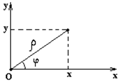

6.5.2*. Связь полярных координат с декартовыми

Совместим начало декартовой системы с полюсом полярной
системы координат, а ось  с полярной осью
с полярной осью  . Найдём связь координат точки и
. Найдём связь координат точки и  .
Она выражается следующей системой уравнений:
.
Она выражается следующей системой уравнений:
с полярной осью . Найдём связь координат точки и .
Она выражается следующей системой уравнений:
Связь координат
точки в декартовой и полярной системе координат
Если известны координаты точек и
, то проекции отрезка
,
а полярный угол отрезка по координатам его начала и конца
находится по формулам: